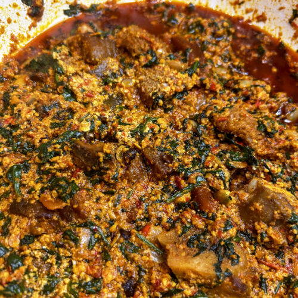
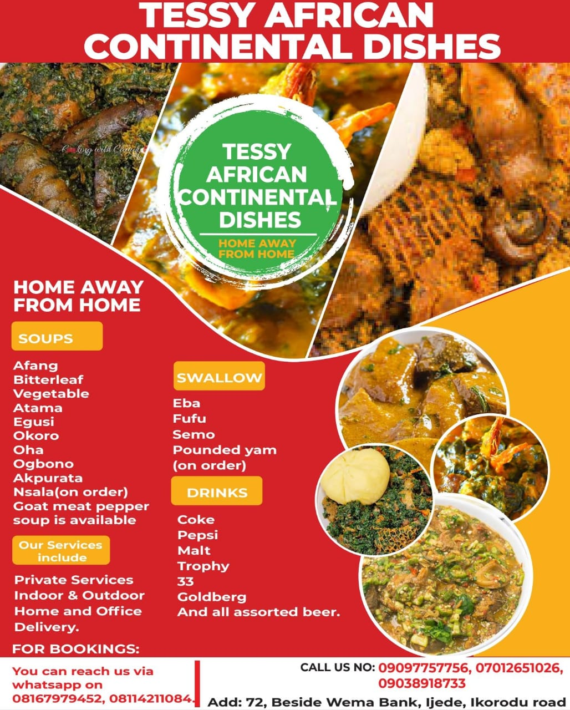

Afang soup is a traditional soup of the Efik and Ibibio people from southeastern Nigeria. It's made from a blend of waterleaf (or spinach) and finely sliced afang (okazi) leaves, cooked with palm oil, assorted meats, dried fish, periwinkles, and often crayfish. Afang leaves are slightly tough, so they are usually pounded or ground before cooking to soften them.
Commonly Served With: Eba, fufu, or pounded yam.
u
$12.99
Oha soup
Oha soup is a traditional Igbo soup from southeastern Nigeria made with tender Oha leaves (also known as African rosewood leaves). It typically includes thickening agents like cocoyam paste, palm oil, assorted meats, stockfish, and seasonings like crayfish and ogiri (fermented condiment). Oha leaves are soft and fragrant, adding a unique flavor to the soup.
Commonly Served With: Fufu, pounded yam, or semovita.
$13.49

Egusi Soup
Egusi soup is a rich and hearty West African soup made from ground melon seeds (called egusi), cooked with palm oil, leafy vegetables (often spinach, bitterleaf, or ugu), and an assortment of meats and seafood. The soup is thickened by the egusi seeds, which give it a nutty flavor and grainy texture. It is usually seasoned with onions, crayfish, stock cubes, and pepper.
Commonly Served With: Pounded yam, eba (garri), fufu, or amala.
.
$9.99

About Tessy African Continental Dishes
Welcome to Tessy African Continental Dishes, where every dish is made with passion and precision. Our chefs blend tradition with innovation to serve you unforgettable meals in a cozy atmosphere.